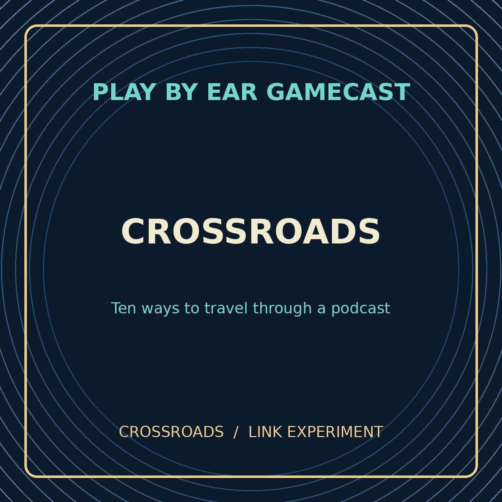

PODCAST EXPERIMENT · 9:00
Crossroads: The Link Laboratory
A hands-on test of chapter jumps, links between episodes, two-device QR relays, and timestamped sharing.
For full testing, listen in the Apple Podcasts iOS app. This browser player is a fallback.
Choose a route
Test the handoff
All buttons lead to experiments, not answers. One method may open a browser before returning to Podcasts.
Chapter navigation (titles and times only)
Select a chapter to seek within the webpage's audio player. This is a browser test, separate from Apple Podcasts' native chapters.
Technical information
Each episode may contain embedded ID3 chapter artwork, alternate left/right stereo information, timestamps, or QR artwork. Apple Podcasts can behave differently from Safari or other podcast apps.
Use a second device to scan on-screen QR codes. If the destination changes, note whether you saw Safari or Apple Podcasts.